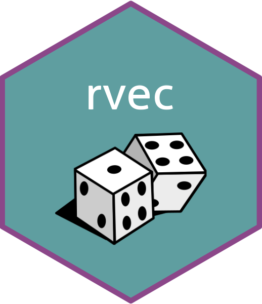

rvec 
Tools for working with posterior distributions and simulation output. An rvec behaves much like a standard R vector, but holds multiple random draws.
Installation
Install the development version of rvec from GitHub with:
# install.packages("devtools")
devtools::install_github("bayesiandemography/rvec")Example
library(rvec, warn.conflicts = FALSE)
library(dplyr, warn.conflicts = FALSE)
x <- rvec(rbind(c(10, 11),
c(100, 101),
c(1000, 1001)))
x
#> <rvec_dbl<2>[3]>
#> [1] 10,11 100,101 1000,1001
x + 1
#> <rvec_dbl<2>[3]>
#> [1] 11,12 101,102 1001,1002